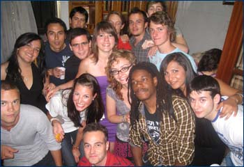

|

По всем вопросам относительно мероприятий, проводимых
факультетом для абитуриентов, а также особенностей обучения на ФМО
вы можете обратиться к зам. декана по довузовской подготовке
Факультет международных отношений создан на базе кафедр экономического
и исторического факультетов в 2002 году.
Программы
Факультет международных отношений объявляет набор в магистратуру по следующим направлениям:
- (программы «Международная интеграция и международные организации» и «Международная защита прав человека»)
Квалификация выпускника – магистр международных отношений.
Форма обучения: очная
Срок обучения: 2 года
Вступительные испытания проводятся в письменной форме по дисциплине «Международно-политические проблемы и процессы», разделы :
- «Основы теории международных отношений»;
- «История дипломатии»;
- «Современные международные отношения».
Квалификация выпускника – магистр зарубежного регионоведения
Форма обучения: очная
Срок обучения: 2 года
Вступительные испытания проводятся в письменной форме по дисциплине «Зарубежное регионоведение», разделы:
- «Современные проблемы регионоведения»;
- «Основы международных экономических отношений»;
- «Экономическая география России и зарубежных стран».
Презентация магистерской программы «Зарубежное регионоведение»
Презентация магистерской программы двойного диплома «Менеджмент международного туризма»
Квалификация выпускника – магистр экономики
Форма обучения: очная
Срок обучения: 2 года
Вступительные испытания проводятся в письменной форме по дисциплине «Экономика», разделы:
- «Экономический анализ»
- «Экономика (на английском языке)»
- «Информатика».
Презентация магистерской программы «Бизнес в развивающихся рынках»
Подготовка в магистратуре осуществляется на договорной основе по очной форме обучения (2 года).
Целевая аудитория: бакалавры и специалисты в области международных отношений, регионоведения, экономики, а также гуманитарных, общественных и естественных наук.
Подача документов в приемную комиссию ВГУ по адресу: г. Воронеж, Университетская пл., д. 1, главный корпус ВГУ, 3 этаж.
Контактная информация: 394068, г. Воронеж, Московский пр-т, 88, ВГУ, учебный корпус № 8, телефон: 89202290114
-
Квалификация: бакалавр экономики
Профиль: Мировая экономика
Форма обучения: очная
Срок обучения: 4 года
Вступительные испытания: русский язык, математика (профильная), обществознание (ЕГЭ)
Контактный телефон: 89202290114 e-mail ebogah0578@yandex.ru Е. П. Борщевская
Вконтакт: https://vk.com/interecon
Квалификация: бакалавр международных отношений
Форма обучения: очная
Срок обучения: 4 года
Вступительные испытания: история, иностранный язык, русский язык (ЕГЭ)
Контактный телефон: 89805442735 e-mail modo6@yandex.ru С. В. Вейс
Квалификация: бакалавр зарубежного регионоведения
Профили: «Страны Европы», «Страны Северной Америки»
Форма обучения: очная
Срок обучения: 4 года
Вступительные испытания: история, иностранный язык, русский язык (ЕГЭ)
Контактный телефон: 89102494909 e-mail zhurbina@ir.vsu.ru Н. Е. Журбина
Вконтакт: https://vk.com/vsuregecon
Презентация бакалаврской программы «Зарубежное Регионоведение»

Вступительные испытания
|